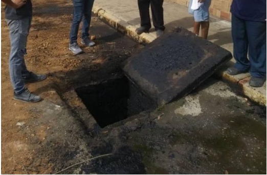
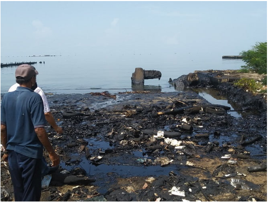
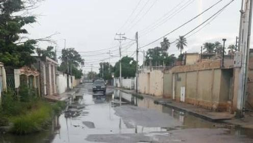

Contaminación por desechos petrolizados en el municipio Cabimas.
Aquí traemos las siguientes noticias con respecto al contaminaciones producidas por los desechos petrolizados en el municipio Cabimas.
Habitantes de Cabimas denuncian constantes derrames de petróleo que afectan el casco central
“El 27 de julio del 2020, vecinos del casco central de la ciudad de Cabimas, estado Zulia, reportaron a través de redes sociales que luego de las fuertes lluvias en la región occidental, parte del casco central resultó inundado de petróleo.
La avenida Independencia y las calles Los Cocos, El Muelle, El Lote, San José y Futuro Coromoto, situadas en el Casco Central y a pocos metros del Lago de Maracaibo, fueron las zonas más afectadas debido a que el petróleo fue arrastrado por la corriente de agua y entró en las viviendas de al menos siete familias. De acuerdo con habitantes de la zona, el derrame fue consecuencia de la falta de limpieza en la red de drenajes.

Imagen de las redes y alcantarillas del casco central de Cabimas. Fuente Antonio Reyes.
Yuleima Sánchez (42a) fue una de las vecinas afectadas en su casa donde habitan otras ocho personas, entre ellas tres niños. Sánchez reside en la calle Futuro Coromoto y su casa resultó anegada luego de las lluvias. Su jardín, sillas y otros enseres que estaban en el frente quedaron manchados de crudo y para poder caminar dentro de su casa se vieron obligados a usar botas plásticas para protegerse del petróleo.
“Al lado del Centro Comercial La Fuente, parte del sector se llenó de petróleo, al haber colapsado la red de drenajes; realmente no es nuevo, ésta situación se ha repetido en varias oportunidades en los últimos meses”, recalcó Eudo Troconis al expresar su preocupación por el derrame que se hizo constante entre el 27 y 29 de julio.

Grave daño ambiental en la orilla del Lago de Maracaibo en Cabimas. Los residuos llegan hasta el casco central en temporada de lluvias.
Principales características de la contaminación por petróleo.
- Desastres medioambientales o catástrofe ecológica. Es una polución química, toxica, inflamable y carcinógeno.
- Produce la muerte de muchas especies, las aves son las más afectadas
- No es biodegradable. Sus efectos dependen del lugar, el momento, tipo de hidrocarburo, viento, corrientes oceánicas, temperatura del agua, cantidad y exposición.
Principal causa de contaminación por desechos petrolizados: derrame de petróleo.
Un derrame de petróleo o marea negra es un vertido de este hidrocarburo que se produce debido a un accidente que contamina el medio ambiente, especialmente el mar. Estos derrames afectan todo el ecosistema donde se produce el evento a lo cual perjudica gravemente la vida marina y la pesca, así como a las costas con efectos que pueden llegar a ser muy persistentes en el tiempo.
La mayoría de los desastres petrolíferos pasan en el mar, sobre todo cerca de las costas donde los ecosistemas son más diversos y llenos de millares de diferentes especies.
La gravedad del derrame petrolero se da por diferentes causas entre ellas: deficiencia del mantenimiento, tuberías desgastadas por el tiempo y desastres naturales. Si existe un derrame de petróleo, se genera afectaciones graves que en ocasiones son irrecuperables sobre todo si se trata de ecosistemas frágiles y únicos. Con respecto a las poblaciones cercanas en donde existen conductos de petróleo y surge derrames, esta población se encuentra expuesta a contraer enfermedades y presentar daños irreversibles en su salud, convirtiéndose en un problema para el sector de salud pública.
Entre las zonas afectadas por esta falla de mantenimiento están el Centro Cívico, los comercios de Los Buhoneros, el Boulevard de Cabimas y viviendas aledañas a las costas del Casco Central con el Lago de Maracaibo.
La situación afecta al menos a 350 personas, entre los comerciantes del mercado municipal de la avenida Independencia y a los habitantes de las calles El Lote, San José, Los Cocos, El Carmen y el Muelle. Las calles se tiñen de de crudo y el paso vehicular queda restringido a medias, al igual que los colectores colapsados.
Vecinos de la región exigen a las autoridades locales y nacionales, así como a la seccional de PDVSA en el municipio, que atiendan la situación que está generando los derrames de petróleo, pues este es un material químico altamente inflamable que podría ocasionar grandes incendios en las viviendas y locales de la zona.
La situación ha resultado tan evidente, que las autoridades municipales junto a Pdvsa, decidieron este 3 de agosto tapar con arena las áreas afectadas, como recurso para ocultar el grave daño ambiental que ocasionan los constantes derrames en el casco central de Cabimas.
Calles del casco central de Cabimas cubiertas con arena para tapar los residuos de petróleo. Calles del casco central de Cabimas cubiertas con arena para tapar residuos de petróleo.
CABIMAS. LA LLUVIA ACRECIENTA EL PROBLEMA DE LAS AGUAS SERVIDAS Y DERRAME DE PETRÓLEO EN GUABINA I

Publicado el 13/10/2020 por Miriam Zambrano
A consecuencia de la lluvia caída durante la mañana de este martes 13 de octubre, los habitantes de la calle 1 de enero del sector Guabina I de la parroquia Carmen Herrera del municipio Cabimas, manifestaron su descontento ante el estado de desidia e indiferencia gubernamental que viven en medio de las aguas servidas y de derrame de petróleo que invaden el sector.
Arelis García habitante de la calle 1 de enero, destacó que desde hace dos años vienen padeciendo del problema de las aguas servidas como consecuencia del colapso en los colectores principales que no solamente afectan a esta calle sino a otras del sector, lo cual es del conocimiento de la autoridad municipal y del concejal de la parroquia Olaire Domingo, quien no se ha abocado atender la necesidad de los vecinos que lo llevaron a ocupar un lugar dentro de la Cámara Municipal.
Manifiestan los vecinos que resultan insoportables mantener el desagradable olor de las aguas servidas las 24 horas del día, lo que acarrea problemas de salud, así como también los daños que se registran en las aceras y el asfaltado de las vías.
René Urdaneta, otro vecino de la comunidad de Guabina I, resaltó la preocupación que en materia de servicios públicos registra este sector el cual padece de los largos racionamientos eléctricos, de las fallas en la recolección de la basura y ahora de los derrames de petróleo que también afecta la circulación por las calles y el deterioro que esto genera en sus residencias.
De acuerdo al informe presentado por el Colegio de Ingenieros del estado Zulia (CIDEZ), el daño ambiental es cada vez más evidente y visible a lo largo de la Costa Oriental del Lago. Dicho impacto es diversificado y abarca a toda la biodiversidad. Diversas especies de fauna y flora, (especies acuáticas y no acuáticas), son contaminadas directamente por el crudo derramado. Existen especificaciones de potenciales daños irreversibles a los ecosistemas de la región, al tiempo que se señala el envejecimiento del lago, que no sólo es impactado por la industria petrolera sino también por el vertido de aguas servidas, agrotóxicos y diversos químicos, procesos de eutrofización, salinización, entre otros (además de procesos de contaminación que provienen desde aguas en territorio colombiano).
Por su parte, PDVSA no ha respondido a las demandas comunitarias ni de las organizaciones participantes. Existe una notable indolencia histórica ante la situación, lo cual se ha agravado por la crisis de la industria, el cese de ciertos protocolos industriales de seguridad ambiental, la carencia de recursos, las sanciones internacionales que también afectan a la petrolera, así como la corrupción y el favorecimiento de los objetivos económicos con el objetivo a toda costa de “recuperar” el país.
Este es un conflicto de múltiples aristas y actores, que se ha mantenido relativamente bajo en el interés público, probablemente porque tradicionalmente ha tendido a asumirse el impacto como justificado con respecto al beneficio económico de la explotación petrolera para el país. Sin embargo, en medio de la crisis, diversos reportajes nacionales e internacionales han generado un cierto nivel de impacto; por otro lado, al ser cada vez mayor el número de afectados en las comunidades pobres a lo largo de la costa del lago y en medio de la fuerte crisis económica, la conflictividad tiende a aflorar y su intensidad pudiera incrementarse.
durante el desarrollo del proceso bolivariano, a pesar de que se prometió en los discursos un respeto profundo por los derechos ambientales y una revolución que salvara el planeta.
Resultados y respuestas ante el conflicto (por parte del gobierno central, gobiernos regionales y locales, empresas involucradas, instituciones supra-nacionales, comunidades, entre otros)
El marco actual de este conflicto ha sido de una intensificación de la crisis ambiental y un severo empeoramiento de la gestión ambiental del país. El Gobierno de Maduro ha impulsado un modelo extractivista de carácter predatorio y en los últimos años una serie de reformas neoliberales que se han orientado a darle todas las ventajas a los inversionistas, lo que deja muy desprotegido al ambiente. La intensificación de la mediatización del conflicto ha logrado elevar un poco el nivel de visibilidad del mismo, aunque prácticamente no existen canales institucionales para abordar el asunto correctamente.
En medio del conflicto político que se ha desarrollado en el país, la antigua Asamblea Nacional (AN) ha planteado denuncias y la realización de visitas oficiales, así como interrogatorios a las autoridades de PDVSA. Pero la empresa petrolera nacional no responde a las demandas comunitarias, ni de las organizaciones movilizadas ni de actores políticos de oposición, lo cual más bien revela un comportamiento histórico de la misma en relación al cuidado del lago. Casos de corrupción en PDVSA, como los expuestos en los últimos meses de 2017, muestran también la crisis institucional y de gestión de la misma, con claras consecuencias ambientales en la actualidad. Además del colapso económico que ha aquejado al país, las sanciones internacionales impuestas a la economía venezolana, y fundamentalmente las que se aplican desde 2019 sobre la industria petrolera nacional, han profundizado dramáticamente esta crisis, con repercusiones tremendas en lo ambiental.
El empeoramiento de la gestión de PDVSA se ha traducido en un inusitado aumento en accidentes, incidentes e ilícitos ambientales, que se cataloga como un notable incremento de los niveles de siniestralidad o accidentalidad de la industria (OEP, 2020). Esto se explica por un proceso de desinversión y de declive de la preparación técnica y administrativa de la directiva de la empresa. Según el profesor Eduardo Klein, del Departamento de Estudios Ambientales de la Universidad Simón Bolívar, PDVSA tenía un sistema de control de contingencia para los derrames, con monitoreos diarios y aéreos y operaciones rápidas de contención de los mismos, que se ha perdido (González, 2021).
La respuesta de PDVSA ante la situación ha sido la de impedir el acceso a la información y no reportar los accidentes petroleros. Los accidentes suelen ser reportados por trabajadores y los sindicatos, y medios de comunicación, expertos y comunidades afirman que cuando convocan directamente a las autoridades, o se les solicita información, estas hacen caso omiso a los llamados. Tampoco se evidencian proyectos firmes y permanentes que permitan el tratamiento de las aguas del Lago y combatir los daños causados por la industria petrolera (Salazar, 2017). A su vez, hay ausencia de datos e investigación técnica y científica sobre la situación del lago, como ocurre con el Instituto para el Control y la Conservación de la Cuenca del Lago de Maracaibo (Iclam), que hace más de 10 años no realiza ningún estudio o investigación de impacto (Nava, 2021).
El escenario se presenta como de gran complejidad, dado la afectación de las bases sociales, defensa de derechos humanos y ambientales y las condiciones generales de vida, que se conjugan con un régimen político autoritario y corrupto.
Alternativas propuestas (por parte de los grupos movilizados, pueblos indígenas, actores políticos y gubernamentales, entre otros)
Grupos de presión (desde locales hasta regionales) están solicitando acciones de remediación y el cumplimiento estricto de la ley. En el año 2016 se presentó el polémico proyecto de Ley de saneamiento de lago de Maracaibo, impulsado en discusión. Dicha ley generó debate, con detractores y defensores, pero tal proyecto no se terminó de poner en marcha. La propuesta de sanear el lago es vieja pero los gobernantes de turno nunca han tenido una real voluntad política de ponerlo en marcha.
Desde nuestro punto de vista estas empresas petroleras nacionales se benefician con la extracción del crudo para obtener grandes ganancias monetarias, pero poco les importa lo más preciado y esencial que son las poblaciones que hacen vida en los alrededores del rio, ¡la naturaleza, la fauna, los animales y los ecosistemas complejos! Estas grandes maquinarias de extraer petróleo son como vampiros modernos succionando a nuestra madre tierra y por su grave negligencia en los manejos de los sistemas crean destrucción por medio de los efectos contaminantes mediante estos derrames. Creo que es la hora y el momento de defender firmemente todo nuestro entorno natural, de ello depende que tengamos un mejor futuro y una mayor conciencia de vida y es por eso que hoy en día es vitalmente necesario el movimiento fuerte y sin pausas de las causas y organizaciones ambientales que hasta la fecha hemos sido determinantes en la batalla por la descontaminación mundial.